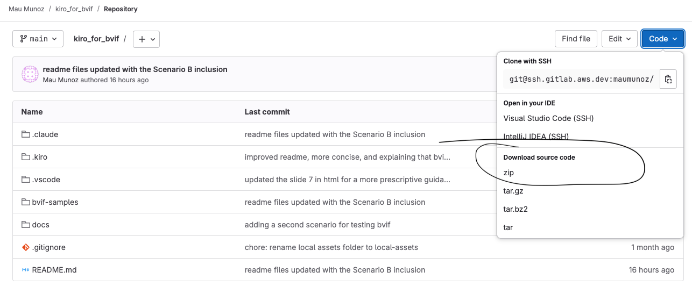
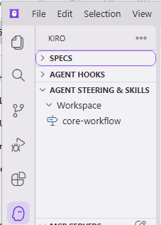
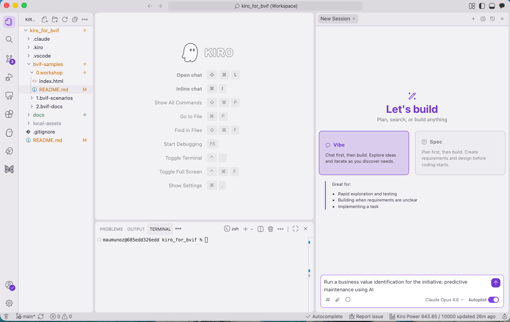
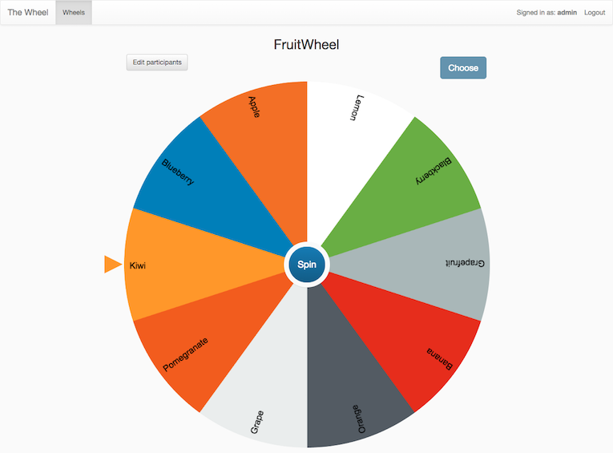

De una idea de IA en lenguaje sencillo a valor cuantificado
Un marco sistemático para guiar la extracción del valor cuantitativo de una iniciativa de IA — anclado en evidencia, trazable de principio a fin.
El valor de negocio en el centro
Mantiene las iniciativas de IA ancladas en los beneficios de negocio que aportan.
Anclado en datos del cliente
Sin adivinar — ancla el valor de cada iniciativa en datos del cliente y comunica en un lenguaje de negocio compartido.
Comparación cuantitativa
Compara iniciativas lado a lado — y sigue la misma iniciativa a lo largo del tiempo.
Tres fases, siete etapas
El proceso
La herramienta

Por qué estás aquí, y qué harás
Por qué estás aquí
Como Amazonians con experiencia y miembros del TFC de Transformation & Innovation, valoramos tu mentalidad de negocio y queremos tu retroalimentación sobre la propuesta de valor y la ejecución de BVIF.
Qué harás
Notas antes de comenzar
Escenarios ficticios
Un entorno controlado para el ejercicio. Elige uno de los dos:
Esto es un trabajo en progreso
Brinda toda la retroalimentación posible — y por favor aclara si cada comentario es sobre el proceso o la ejecución.
Ejecútalo de la forma más realista posible
Responde a Kiro como lo haría un representante del cliente. Los resultados variarán entre participantes — eso es el marco funcionando como se diseñó.
Logística
Se ha creado un canal de Slack para la sesión de hoy. Usa la opción huddle para consultas 1:1.
Monitoreo de progreso y retroalimentación
Usa la página paso a paso en el navegador para seguir tu progreso y enviar retroalimentación en cada paso — el lenguaje natural está bien. En Chrome / Edge / Arc puedes dictar con el micrófono. Cuando la sesión termine, comparte tu archivo de retroalimentación generado con el facilitador.
Sigue los pasos — elige cualquiera para expandir
Marca las casillas a medida que terminas cada paso para visualizar tu progreso.
1.1 Instala Kiro
Instala el IDE de Kiro en tu máquina local antes de que comience la sesión.
- Ve a https://kiro.dev/ y sigue las instrucciones de instalación para tu sistema operativo.
- Kiro es la única herramienta requerida.
gity el acceso SSH agitlab.aws.devson opcionales — solo se necesitan para la Opción A en el paso 1.3.
1.2 Crea una carpeta de espacio de trabajo vacía
Crea una carpeta vacía en cualquier lugar de tu máquina local donde tengas permiso de escritura. Kiro la usará como directorio base de todos los artefactos BVIF.
mkdir -p ~/workspace-bvif
~/workspace-bvif/.1.3 Copia los archivos del proyecto en tu espacio de trabajo
Incluye .kiro/, bvif-samples/, docs/ y README.md — las reglas de steering, los escenarios resueltos, las capturas de apoyo y el README del proyecto. Elige la opción que se ajuste a tu entorno:
Después de cualquiera de las opciones, tu espacio de trabajo debería verse así:
~/workspace-bvif/ ├── .kiro/ │ ├── steering/ │ └── bvif-rule-details/ ├── bvif-samples/ │ ├── 0.workshop/ │ ├── 1.bvif-scenarios/ │ └── 2.bvif-docs/ ├── docs/ └── README.md
1.3 · Opción A — Clonar con git
En una terminal, navega a tu carpeta de espacio de trabajo y ejecuta:
cd ~/workspace-bvif git clone git@ssh.gitlab.aws.dev:maumunoz/kiro_for_bvif.git /tmp/kiro_for_bvif cp -R /tmp/kiro_for_bvif/.kiro /tmp/kiro_for_bvif/bvif-samples /tmp/kiro_for_bvif/docs /tmp/kiro_for_bvif/README.md . rm -rf /tmp/kiro_for_bvif
.kiro/, bvif-samples/, docs/ y README.md en tu espacio de trabajo. El rm final es solo limpieza.1.3 · Opción B — Descargar el archivo fuente
Abre la página del proyecto en GitLab, haz clic en Code y elige Download source code → zip.
- Página del proyecto: gitlab.aws.dev/maumunoz/kiro_for_bvif
- Descomprime el archivo.
- Copia
.kiro/,bvif-samples/,docs/yREADME.mddel contenido extraído a tu carpeta de espacio de trabajo.

1.4 Abre el espacio de trabajo en Kiro
En Kiro: File → Open Folder… y selecciona la raíz del espacio de trabajo.
Verifica que la regla de steering se cargó:
- Haz clic en el icono de Kiro en la barra de actividad.
- Expande Agent steering & skills.
- Bajo Workspace, deberías ver core-workflow.

2.1 Elige un escenario
Explora los escenarios ficticios disponibles y elige uno.
- Carpeta de escenarios (gitlab | local)
- Resumen de escenarios — comparación Manufactura vs. Club deportivo (gitlab | local)
2.2 Lee el guion
Abre el archivo del guion dentro de la carpeta del escenario que elegiste y léelo por encima.
- Familiarízate con el cliente, el contexto y la iniciativa de IA propuesta.
- Interpretarás el papel de un representante del cliente al responder las preguntas de Kiro.
.md, abre el archivo en Kiro y usa su vista previa de markdown integrada (Cmd+K V / Ctrl+K V para vista dividida, o Cmd+Shift+V / Ctrl+Shift+V para vista completa) para leerlo con formato. Para otros formatos, usa el lector nativo correspondiente — Word para .docx, un visor de PDF para .pdf, cualquier editor de texto para .txt.
2.3 Inicia una nueva sesión en Kiro
Con el espacio de trabajo abierto, abre una nueva sesión de chat y cambia a Vibe mode. Escribe:
Run a business value identification for <título de tu iniciativa de IA>.
Por ejemplo: Run a business value identification for the initiative: predictive maintenance using AI.

2.4 Sigue las indicaciones en Kiro
El agente recorre las 7 etapas de BVIF, deteniéndose para tu aprobación entre cada una. Responde usando el guion como tu fuente de verdad.
- Cada interacción escribe artefactos en
bvif-docs/<NN>-<slug>-<yyyymm>/en la raíz del espacio de trabajo. - Puedes cerrar y reabrir el espacio de trabajo en cualquier momento — el agente retoma donde se quedó.
00-session-setup/ hasta 07-final-results/ están pobladas y se ha generado 07-final-results/final-results.md.2.4 · Monitorea el progreso
Dos archivos dentro de la carpeta de tu iniciativa lo registran todo:
bvif-state.md— qué etapas están completas.audit.md— registro completo de cada interacción con el agente.
- Elige la carpeta del espacio de trabajo (botón en la parte superior del formulario de retroalimentación), luego elige una iniciativa para ver su estado actual.
2.4 · Nota sobre la Etapa 5 (Recolección de datos)
Esta es la única etapa donde Kiro puede pedirte compartir archivos. Dos opciones — se pueden combinar.
05-data-collection/uploads/, lee los archivos que coloques ahí y extrae datos con una etiqueta de fidelidad de la fuente (Alta / Media / Baja).uploads/ — transcribe primero los números relevantes.3.1 Recorre tu entregable final de BVIF
En tu franja de tiempo asignada (normalmente 5 minutos por participante), explica a la sala:
- La definición de la iniciativa.
- Las métricas que seleccionaste.
- Las decisiones de factibilidad que tomaste.
- Los datos que recolectaste.
- El valor de negocio anualizado final.
3.2 Comparte tus 2 principales comentarios
Del ejercicio — qué funcionó bien, qué resultó confuso, qué cambiarías.
3.3 Selección de presentador — "La Rueda"
Los presentadores se eligen al azar usando The Wheel. El facilitador agrega el nombre de cada participante a la rueda y la gira.

Retroalimentación final — encuesta de cierre
Unas pocas calificaciones rápidas + una pregunta abierta para cerrar la sesión. Los envíos quedan en el mismo archivo de retroalimentación que las entradas por paso, etiquetados con la fase Final feedback.
4.2 Comparte tu archivo de retroalimentación con el facilitador
Todos tus envíos durante el taller quedaron en un único archivo JSON. Envíalo al facilitador antes de desconectarte.
- Abre tu carpeta de espacio de trabajo y navega a
bvif-samples/0.workshop/feedback/. - Deberías ver
feedback-<alias>.json— y posiblemente archivos adicionalesfeedback-<alias>-<date>.jsonsi tu navegador recurrió a las descargas. - Coloca el archivo (o archivos) en el canal de Slack del taller — escribe por DM al facilitador si prefieres no compartirlo públicamente.